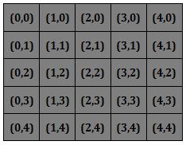
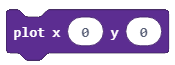
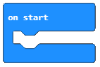
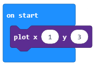
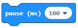
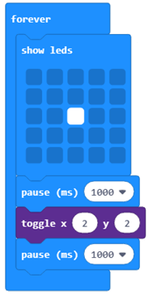
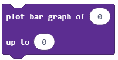
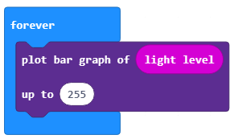
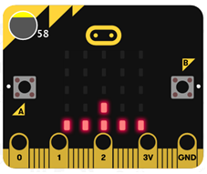
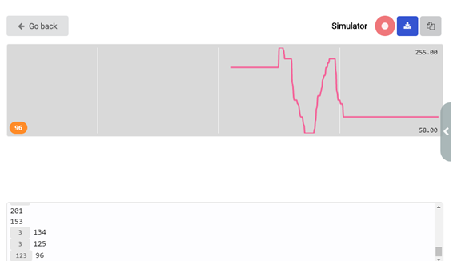

Работа с блокове от LED категория¶
В тази частще се запознаем с блоковете от категория , а също така и как можем да изберем мястото на LED на екрана, така че да ги пуснем спрямо позицията им.
Декартовата координатна система се използва в математиката за определяне на позицията на точка в равнина. В тази система има две координатни ости : x и y.
Екраните на Micro:bit и MakeCode симулацията използват тази система, за да определят позициите на LED-овете по екрана. Осите х и у формират мрежа 5х5 от редове и колони, където има 5 LED-а на хоризонталната ос х (ред), и 5 LED-а на вертикалнта ос у (колона). Горният ляв ъгъл има координати (0,0), като стойностите на координата х варират от 0 до 4 и нарастват с 1 от ляво надясно; стойностите на координатата у също варират от 0 до 4, но нарастват от горе надолу. Напривмер, ако LED-ът се намира в първия ред и третата колона, координатите му са (0,2).
Създайте програма, която ще включи LED-овете с координати (3,3).
Влачете блока  от категория в блока , който е вече на работния плот.
Крайният резултат:

За да тестваме програмата, ще използваме симулатора или ще натиснем бутона .
- LED на симулатор А.
- Браво!
- LED на симулатор B.
- Грешен отговор!
- LED на симулатор C.
- Грешен отговор!
Q-6: Погледнете внимателно блока.
Кой лед ще светне след стартирането на програмата?

Ако искаме да изгасим LED-овете, ще използваме блока , в който ще изберем координатите на LED-овете, които искаме да изключим. С други думи, ще изберем х и у координатите на LED-а.
Задача: В началото на програмата трябва всички LED-ове да са пуснати. Когато потребителят натисне копчето А, LED-овете, намиращи е на ъглите на екрана ще изгаснат.
Сравнете решението си с нашето: https://makecode.microbit.org/_4e6RXM5FmA8M
Задача: Създайте програма, която ще симулира пътен светофар и ще светва и изгася LED-овете, намиращи се на третия ред и втората, третата и четвъртата колона.
Малко помощ: Като светлините се сменят на определени интервали (нека кажем 1 секунда), използвайте блока  , за да дефинирате интервала.
Сравнете решението си с нашето: https://makecode.microbit.org/_TRPRj98xj2Ap
Блокът се използва за пускане на изгасен LED или за изгасяне на светнат. Разбира се, и в този блок трябва да въведем стойности на х и у.
- Светлината ще изгасне след 1 милисекунда.
- Грешен отговор!
- Светлината ще се пусне и ще изгасне на всяка милисекунда.
- Браво!
- Светлината ще светне след 1 милисекунда.
- Грешен отговор!
Q-7: Погледнете внимателно блока.
Какво ще се покаже на екрана при задействане на представените блокове?
Допълнение: За да анализираме данните графична, в нашия случай-осветеността, можем да използваме блока  , където ще въведем началната и крайната стойност на на интервала, който ще анализираме.
В нашия случай, началната стойност ще бъде блокът , който съхранява стойностите, отчетени от светлинния сензор, и крайната стойност ще бъде 255, защото количеството от измерена светлина варира от 0 до 255.
Блокът трябва да се постави в  от категория .
от категория .
Блокът изглежда така:
За да тестваме програмата, ще пуснем симулатора, натискайки бутона .
В този случай, ще отворим симулатора, който представя данните под формата на крива.
 Този симулатор ще работи, докато не го спрем, натискайки бутона . Ако искаме да свалим събраните входящи данни, можем да ги свалим на своя компютър в . csv формат, натискайки бутона  . Този документ съдържа колони с време в милисекунди и измерена осветеност.
. Този документ съдържа колони с време в милисекунди и измерена осветеност.